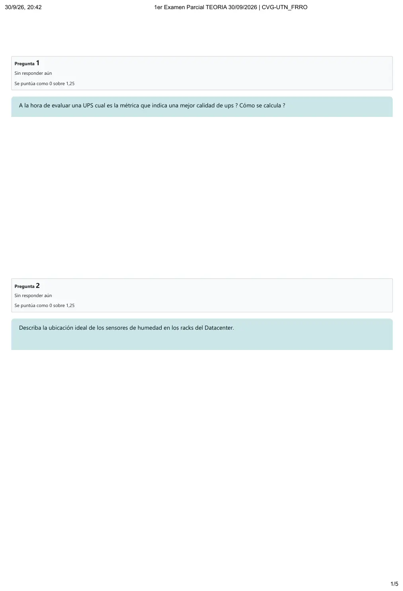
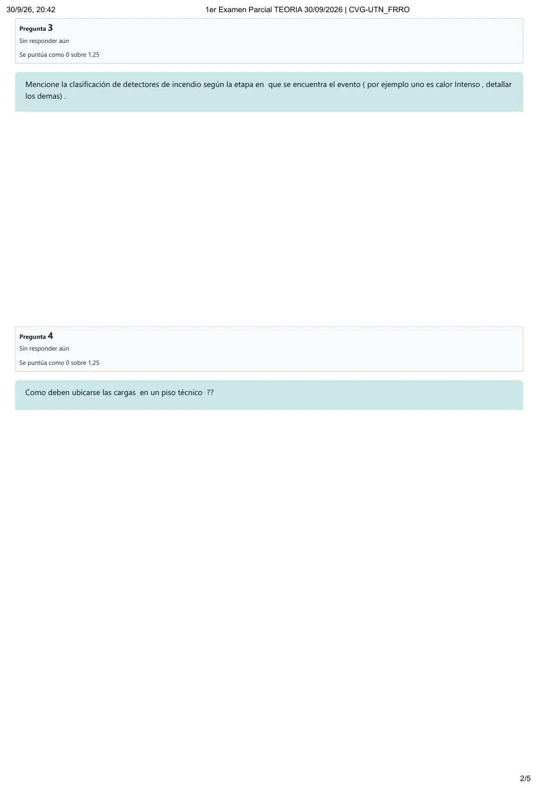
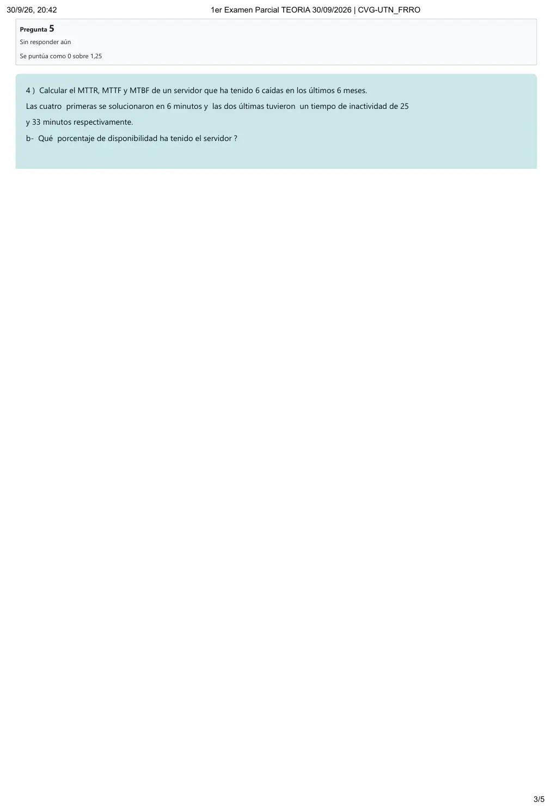
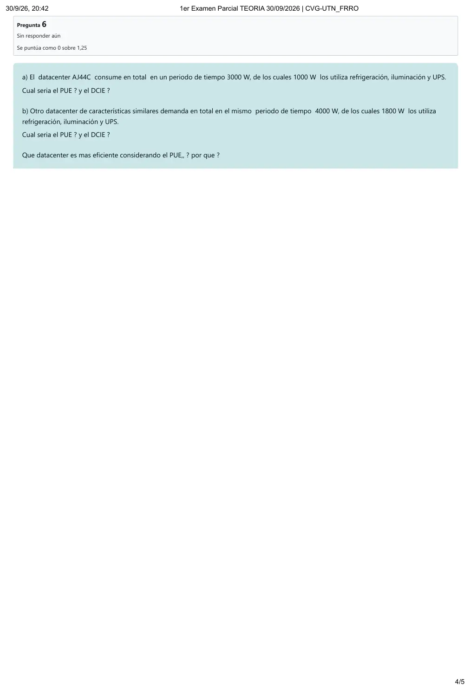
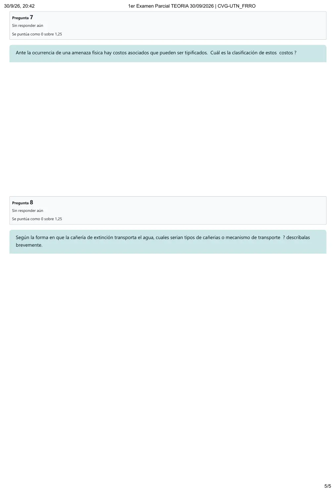

1° parcial de teoría, 30/09/2026
1° parcial, teoría, 30/09/2026
Enunciado










Propuesta de respuesta
Respuesta no verificada. La propuso Luta Studios con inteligencia artificial y ningún docente la revisó. Puede tener errores.
Pregunta 1. La eficiencia. Es el cociente entre la energía que sale de la UPS y la que entra, en porcentaje. Mientras mayor sea, más conveniente es la UPS.
Por ejemplo, si entran 100 kW y salen 90 kW, la eficiencia es 90 %. Los 10 kW perdidos, por 24 horas y 365 días, son 87 600 kWh por año.
Pregunta 2. Van en los pasillos fríos, al frente de los racks. El apunte pide un sensor de humedad por fila, en la parte frontal del rack y a la mitad de la fila.
Pregunta 3. Son cuatro etapas, de la más temprana a la más avanzada.
- Pre combustión: el fuego empieza a originarse y todavía no se ve. Lo detectan sensores de alta sensibilidad con tecnología CCD.
- Humo visible: aparecen indicios de humo.
- Fuego con llamas: ya aparecen las llamas. Los detectores térmicos del mercado no se recomiendan para data centers.
- Calor intenso: después de varios minutos, las llamas toman temperatura elevada y el incendio es muy difícil de controlar.
Pregunta 4. El apunte habla de cargas concentradas o puntuales, puntos de pequeña superficie que soportan todo el peso. Las patas del mobiliario fijo son las que hacen la carga puntual más fuerte. Por eso conviene apoyar el peso sobre una superficie mayor, así se distribuye en una zona más amplia del piso y baja la concentración en cada placa.
Pregunta 5. El apunte 4 toma el mes de 30 días y trabaja en minutos.
| Dato | Cuenta | Resultado |
|---|---|---|
| Tiempo total | 259200 min | |
| Inactividad | 82 min | |
| Funcionamiento correcto | 259118 min |
a)
b) La disponibilidad es el funcionamiento correcto sobre el tiempo total.
Pregunta 6. IT no viene en la consigna. Es el total menos lo que usan refrigeración, iluminación y UPS.
| Data center | Total | Soporte | IT | PUE | DCiE |
|---|---|---|---|---|---|
| a) | 3000 W | 1000 W | 2000 W | ||
| b) | 4000 W | 1800 W | 2200 W |
Es más eficiente el a), porque tiene el PUE más bajo. De cada 3 W que consume, 2 W van a los equipos de IT. En el b) casi la mitad se va en soporte. Con la tabla del apunte 5, el a) está en el nivel eficiente y el b) queda entre eficiente y promedio.
Pregunta 7. - De oportunidad: las utilidades que se pierden por no estar disponibles.
- Directos: influyen directamente en las finanzas y son fáciles de medir. Por ejemplo, empleados esperando, transacciones, recuperación, testeo y demandas.
- Indirectos: se sabe que existen, pero son difíciles de medir. Por ejemplo, satisfacción, clientes perdidos, imagen y relaciones públicas.
Pregunta 8. - Mojada: es la más común. La cañería está llena de agua, que sale apenas se activan los rociadores. Tiene riesgo de goteras y puede subir la humedad.
- Seca: está cargada con aire comprimido y nitrógeno. Cuando se activa, el agua empuja el aire y después sale por los rociadores.
- Pre acción: usa cañería seca y un tablero que hace de doble control, porque verifica por segunda vez si hay incendio antes de largar el agua. Es la altamente recomendada para data centers.
Respuesta no verificada. Puede tener errores.
Se armó con Resumen del 1° parcial de teoría, secciones Métricas de disponibilidad, PUE y DCiE, Costos ante una amenaza física, Detección de incendios, Extinción, UPS, Sensores y Piso técnico. Las cuentas siguen los ejemplos de los apuntes 4 y 5.
Quedó en duda: En la pregunta 5 los resultados van redondeados a dos decimales; sin redondear, el MTTR es y el MTTF minutos. Se tomó el mes de 30 días, como el ejemplo del apunte 4. Si tu comisión usa los días reales del calendario, cambian todas las cuentas. En la pregunta 4 el apunte no dice «ubicar», así que la respuesta sale de lo que dice sobre cargas puntuales y superficie de apoyo.
¿Cómo te fue?
Marcá cada tema del examen.
- UPSUPS, en 1° parcial, teoría
- sensoresSensores, en 1° parcial, teoría
- detectoresCómo viene el examen, en 1° parcial, teoría
- piso técnicoPiso técnico, en 1° parcial, teoría
- MTTRCómo viene el examen, en 1° parcial, teoría
- PUEPUE y DCiE, en 1° parcial, teoría
- costosCostos ante una amenaza física, en 1° parcial, teoría
- cañeríasCómo viene el examen, en 1° parcial, teoría